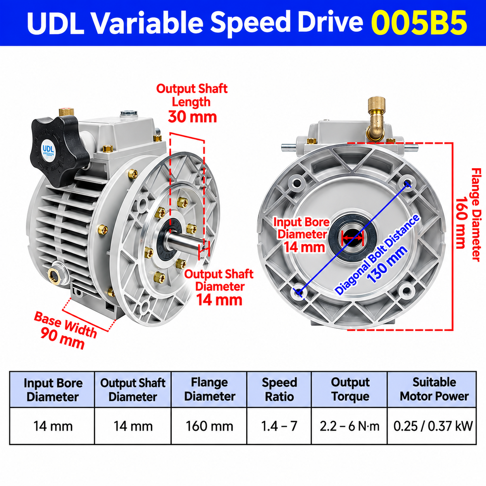

UDL005B5 Dimensions
| Specification | UDL005B5 |
|---|---|
| Input bore diameter | 14 mm |
| Output shaft diameter | 14 mm |
| Output shaft length | 30 mm |
| Flange diameter | 160 mm |
| Diagonal bolt distance | 130 mm |
| Base width | 90 mm |
| Speed ratio | 1.4–7 |
| Output torque | 2.2–6 N·m |
| Suitable motor power | 0.25 / 0.37 kW |
What Is a UDL005 Variable Speed Drive?
UDL005 is a mechanical variable speed drive designed for smooth speed adjustment. Turning the handwheel changes output speed within the specified range without changing gears. It can be considered for conveyors, packaging machines and other industrial equipment where flexible mechanical speed adjustment is required.
Motor Compatibility and Replacement Checks
UDL005 can be paired with 0.25 kW or 0.37 kW motors, depending on the application. Before ordering, compare the existing motor shaft, mounting flange and required output-speed range with the UDL005B5 drawing. For separately specified motors, review the electric motor options.
For broader model comparison, see the UDL/UD mechanical speed variator range. If the drive will be paired with a reducer, review the NMRV worm gearbox range and the motor-to-gearbox matching guide.
Frequently Asked Questions
What are the main UDL005B5 mounting dimensions?
The drawing shows a 160 mm flange diameter, 130 mm diagonal bolt distance and 90 mm base width. Check the complete existing interface before replacement.
What motor can be used with UDL005?
The supplied reference lists 0.25 kW and 0.37 kW motors. Confirm the final configuration against the actual application and mounting arrangement.
Can SMK supply the UDL005 with a motor?
Yes. UDL005 can be supplied separately or with a compatible motor after the required configuration is confirmed.